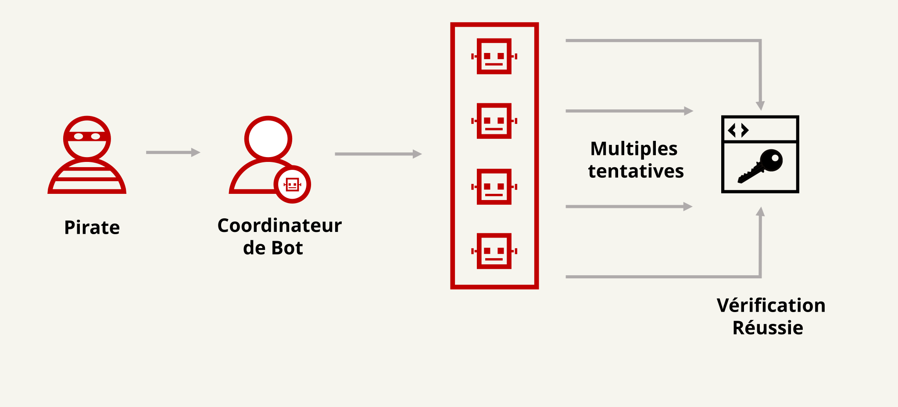

Une attaque par force brute consiste à deviner un mot de passe en essayant automatiquement de très nombreuses combinaisons jusqu’à trouver la bonne. L’attaquant utilise des programmes qui testent des mots de passe courants (123456, azerty, password, etc.) ou des listes de mots de passe déjà volés.
Pour se protéger, un site doit limiter le nombre de tentatives de connexion, ajouter des délais après plusieurs échecs et proposer l’authentification à deux facteurs (2FA/MFA).

Un joueur utilise Fortnite2024 comme mot de passe sur plusieurs sites. Un attaquant teste des mots de passe liés au gaming sur son compte et finit par tomber sur le bon. S’il avait utilisé un mot de passe unique et activé la double authentification, le compte serait resté protégé même avec ce mot de passe deviné.